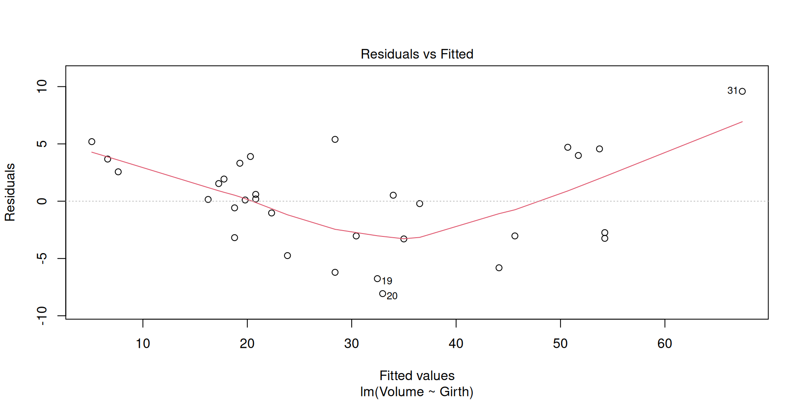
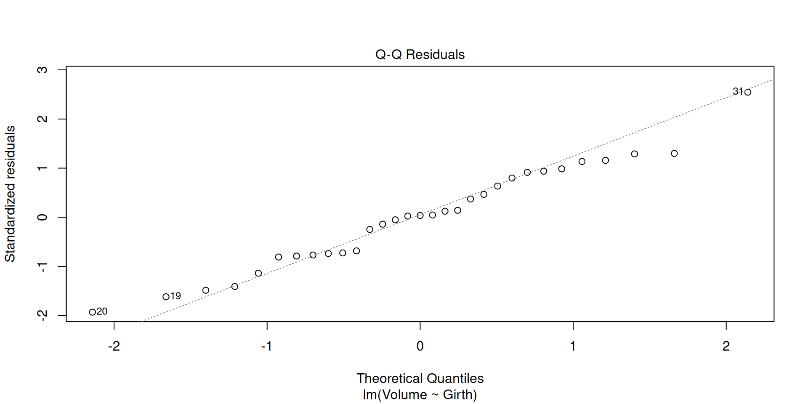
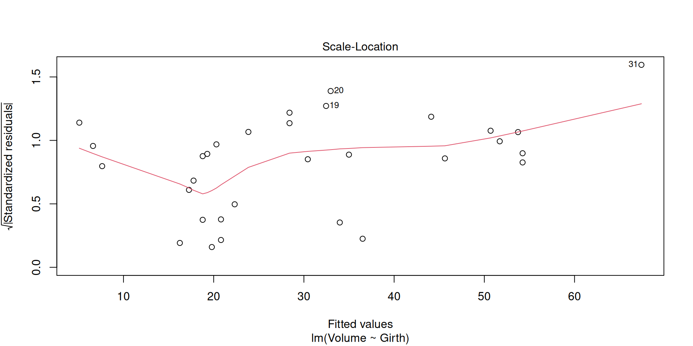
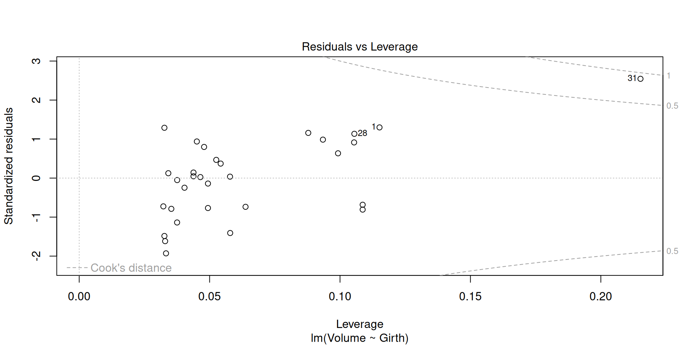
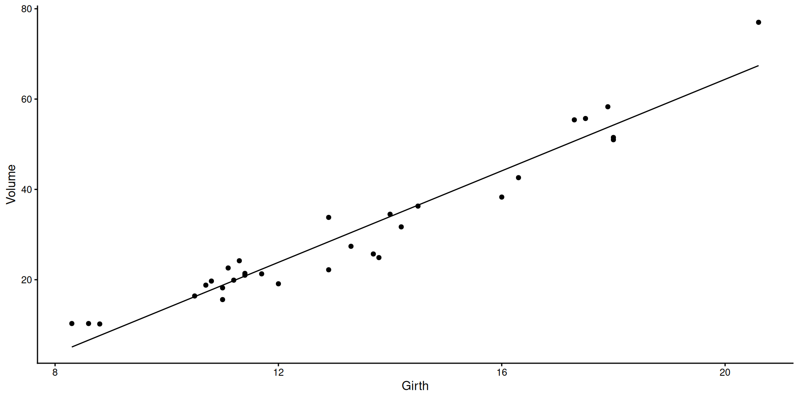
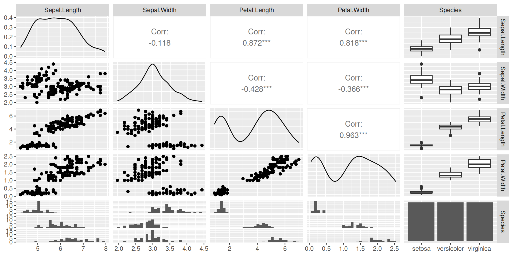

This worksheet will help practice fitting and using linear models. It will use ideas previously introduced e.g. about hypothesis testing — including the null hypothesis, p-values and their interpretation. It will implement the approaches described in the videos using real data and R code.
We’ll focus this time on plant data sets trees and irisboth available in R
BIOL65161 students
Please upload your saved .R script to Canvas before 5PM on the day of the practical.
Part 1: Loading and visualising the trees data
trees is a dataset within R
1.1 Load up the data
load and take a first look at some of the data
# Load the packages we're going to use today# Use install.packages("...") if not already installedlibrary(tidyverse)library(nlme)library(GGally)# Take a look at the datatrees |>as_tibble()
# Take a look at the help file to see what the columns each mean?trees
All three variables come through as the same type
Q1.1.1 What is the columns’ variable type and is it appropriate?
For reference here is a table of possible data types:
Category
R Type/Class
Description / Example Usage
Numeric
numeric, integer, double
Continuous or count data, e.g. measurements, ages, weights.
Logical
logical
TRUE/FALSE values for conditions or binary flags.
Categorical
factor, ordered
Discrete categories or ordinal scales (e.g. sex, treatment).
Text
character
Plain text strings.
Date / Time
Date, POSIXct, POSIXlt
Calendar dates and timestamps.
Complex Numbers
complex
Numbers with real and imaginary parts (rarely used).
Raw Data
raw
Byte-level data, e.g. binary representations.
Containers
list, data.frame, tibble, matrix
Structures for grouping multiple variables or elements.
Q1.1.2 What simple analysis or hypothesis test might we do on this data? – Try doing that analysis
Think back to options from the last session…don’t spend too much time on this!
Q1.1.3 What might we think of as response and explanatory variables here?
Think about why this data was collected and what they might have been able to control in collecting the data.
1.2 Visualise the data
Q1.2.1 Make a plot showing all three variables in an appropriate way
Part 2: Fitting a linear model
2.1 fit a linear model of volume as a function of girth
And then check its diagnostic plots
model_vg <-lm(Volume ~ Girth, data = trees)plot(model_vg)




Q2.1.1 What do you make of the diagnostics plots and what might you do about it?
Now look at the summary of the model
summary(model_vg)
Call:
lm(formula = Volume ~ Girth, data = trees)
Residuals:
Min 1Q Median 3Q Max
-8.065 -3.107 0.152 3.495 9.587
Coefficients:
Estimate Std. Error t value Pr(>|t|)
(Intercept) -36.9435 3.3651 -10.98 7.62e-12 ***
Girth 5.0659 0.2474 20.48 < 2e-16 ***
---
Signif. codes: 0 '***' 0.001 '**' 0.01 '*' 0.05 '.' 0.1 ' ' 1
Residual standard error: 4.252 on 29 degrees of freedom
Multiple R-squared: 0.9353, Adjusted R-squared: 0.9331
F-statistic: 419.4 on 1 and 29 DF, p-value: < 2.2e-16
Notice the R-squared value, i.e. the proportion of variance explained, is very high (0.93)
Q2.1.2 Figure out the best estimate, error and units for how much volume increases with girth
2.2 Visualise the fit
Want to see what’s going on – by default the predict function gives the value predicted by the model at the same points as you have data, so you can create a new column of precitions:
trees |>mutate(pred =predict(model_vg)) |>ggplot(aes(x = Girth, y = Volume)) +geom_point() +geom_line(aes(y = pred))+theme_classic()

Q2.2.1 Try re-plotting the data and fit with two logarithmic axes – how does this make you feel about doing a log-log (power law) fit instead?
If in doubt how to do it, ask your favourite large language model!
Part 3: Comparing models
3.1 Adding another main effect and an interaction effect
This regression model explains lots of the variance, but wouldn’t we expect tree height to tell us something useful about the volume too?
Let’s fit a model containing both Girth, Height and their interaction:
model_vghi <-lm(Volume ~ Girth * Height, data = trees)
Decide if we need that interaction effect – can check using anova:
That says that the interaction between girth and height is highly significant (\(p = 7.5 \times 10 ^{-6})\))
Q3.1.1 Can you test the significance of the girth:height interaction term in a different way?
Q3.1.2 What proportion of the variance in volume is explained by this model?
Q3.1.3 Check the diagnostic plots for the model and plot the predicted values with the data - what do you conclude?
3.2 Thinking about model simplification
If losing the interaction effect hadn’t made the model significantly worse, we could have removed it and then, tried removing one of the main effects (height or girth) too, picking the one where the effect was least significantly different from zero.
This kind of sequential simplification can help make complex models much more interpretable, but needs to be done carefully – effects shouldn’t be removed if they are required by (higher order) interactions. And it’s always the least significant effect that should be removed first, comparing models with and without the effect after every removal. Such stepwise simplification and comparison can be done by AIC - checking the AIC of each model with one effect that can be removed, removed. The better model – the one with the lower AIC – is chosen and the process is repeated.
The step() function does this in an automated way:
Here we see that the starting model (in the row <none> because none of the effects was removed) has a lower AIC (65) than a model with the Girth:Height interaction removed (AIC = 87), showing that the Girth:Height interaction should be kept. step doesn’t try removing the main effects of either Girth or Height, because they’re each involved in the Girth:Height interaction, so that interaction would need to be removed first. The output lines below this, starting with “Call” show the final, reduced model that is returned – here it’s the same model that we started with.
Part 4: Linear modelling with a categorical explanatory variable
Using iris a classic dataset of measurements from three species of iris.
Figure 1: Iris species represented in the iris dataset.
4.1 take a first look at the data and wrangle it
Take a first look at some of the data, which contains five variables. Also check the help file.
ggpairs(iris)

?iris
Could think about this in different ways, but here we’re going to think about how different species have different measurements - species is the explanatory variable, measurement is the response. This means that, to get long-format data, all the different measurements of different structures can be stacked up in a single column:
# As it happens all the measurement columns have a dot in the middle - let's use that to identify them and stack them up:iris_stacked <- iris |>pivot_longer(contains("."), names_to ="structure_measured", values_to ="measurement")iris_stacked
Q4.1.1 Look at the data types for the different columns – what are they? Why are they all different? Do they need to be?
Q4.1.2 Plot out the full dataset and comment on what it looks like
Start by plotting however you can. Then try to do a version involving the measured structure on the x axis and separate facets for each species using facet_wrap(). Ask a large language model how to angle your axis text so that it doesn’t overlap
4.2 fit a linear model with both explanatory effects and their interaction
model_ssi <-lm(measurement ~ Species * structure_measured, data = iris_stacked)
Q4.2.1 Check the diagnostic plots and summary – is this model ok?
What might you consider changing?
Part 5: Fit a revised linear model that doesn’t assume homoscedasticity
For this will need to use the gls() function in the nlme package. gls stands for ‘generalized least squares’ it lets us relax some of the strict assumptions in a normal linear model.
5.1 Fit exactly the same model as we fitted with lm(), but with gls()
model_ssi_g <-gls(measurement ~ Species * structure_measured, data = iris_stacked)
Q5.1.1 Compare the models fitted by lm and gls – convince yourself that the underlying model is the same and use tools you know about (e.g. plot(), summary(), anova()) to compare how they are presented.
The models can be directly compared via anova, showing that the fit of the two models is equivalent
5.2 Fit a model where the variance can change with the fitted value
There are different ways we could imagine the variance changing, so there are several different variance structures available that we could try (see ?varClasses), but varPower is one that, by default, allows variance to change as a power function of the fitted value. It often does a good job. Slightly oddly, it is given as the weights argument:
model_ssi_gv <-gls(measurement ~ Species * structure_measured, weights =varPower(), data = iris_stacked)
If we now examine the fit (just printing the model here, though could use summary() to get more output), can see that it’s fitted an extra parameter power:
model_ssi_gv
Generalized least squares fit by REML
Model: measurement ~ Species * structure_measured
Data: iris_stacked
Log-restricted-likelihood: -199.9178
Coefficients:
(Intercept)
1.462
Speciesversicolor
2.798
Speciesvirginica
4.090
structure_measuredPetal.Width
-1.216
structure_measuredSepal.Length
3.544
structure_measuredSepal.Width
1.966
Speciesversicolor:structure_measuredPetal.Width
-1.718
Speciesvirginica:structure_measuredPetal.Width
-2.310
Speciesversicolor:structure_measuredSepal.Length
-1.868
Speciesvirginica:structure_measuredSepal.Length
-2.508
Speciesversicolor:structure_measuredSepal.Width
-3.456
Speciesvirginica:structure_measuredSepal.Width
-4.544
Variance function:
Structure: Power of variance covariate
Formula: ~fitted(.)
Parameter estimates:
power
0.5426381
Degrees of freedom: 600 total; 588 residual
Residual standard error: 0.1920414
The fitted value of power is 0.54. That’s positive, meaning that the variance is increasing with the fitted value as we saw in the lm fit. Since this is a power function, that means that variance is increasing roughly with the square root of the fitted value.
Q5.2.1 Compare the two gls models using anova() – the one with the changing variance and the one without – does this extra parameter make the model better, any more than would be expected just by having a more complex model?
Q5.2.2 Look at the summaries of the models with and without the variance effect - what has and what hasn’t changed among the parameters?
Because the estimates of the coefficients haven’t changed, we might expect the residuals plots to look the same too, but they don’t. This is because the residuals plots show ‘Standardised residuals’. That means that the residuals have been scaled by the expected variance, which is different in the two models, so we can inspect them to see if the model is now ok.
Q5.2.3 Look at the residuals plots for this heteroscedastic model – are they better? Are there other aspects that could still be improved?
Q5.2.4 Redo your plot of the data from Q4.1.2, but add on blobs for the predicted values from model_ssi_gv and give it a squareroot y-axis using scale_y_sqrt(), which we now expect to make the variance look similar across all the data.
Q5.2.5 Look at the coefficients of the model. The Wald tests on ALL of them are significant, meaning that the coefficients themselves are significantly different from zero, but try figuring out exactly what biological hypothesis is being tested by the first of the interaction terms.
Part 6: Reflection
What we’ve done with this iris analysis would be called a two-way ANOVA because there are two categorical explanatory variables – species and structure measured, whereas the trees analysis would be called a multiple regression because there are two continuous explanatory variables. However, what we’ve done in both cases is very similar and the mechanics of how R has done the analysis is very similar, so it’s often best just to refer to both of them as linear models
All the effects in both of these models were highly significant, so while you probably would need to report the p-values for the effects (girth or height; structure_measured or species), the use of the analysis has much more to do with what the parameters are, what the predictions are, how much variance is explained and what that variance is like.
In the iris analysis you might still have questions about whether particular structures are significantly different from one another e.g. versicolor sepal width versus virginica sepal width. The best way to go about this is to have hypotheses you want to ask clear before you start the analysis and arrange the levels of the factors (e.g. using relevel() to make versicolor and sepal width the to be the reference levels of species and structure_measured) so that the Wald test tests your hypothesis. This is called using planned contrasts. There are ways of doing such comparisons once you’ve got your model too, these are called posthoc tests.
Often posthoc tests make all possible comparisons – this is usually a bad idea, because we usually have some sort of idea what we’re looking for and if we do enough tests a small proportion of them will come out significant just by chance. If you really want to do posthoc tests, e.g. with the emmeans or multcomp packages, use what you know about the comparisons, e.g. if you have a control treatment, you might only want to compare each treatment to the control, not everything to everything, using Dunnett’s test. If you really do want to compare everything to everything else, at least do it ‘honestly’ using Tukey’s HSD (honest significant difference) test which accounts for doing lots of tests. Both are available in emmeans and multcomp.
The fact that the two categorical variables in the iris_stacked tibble had different classes didn’t cause problems for either the plotting or the analysis. However, if we start to modify those variables, for example to change the reference level with relevel(), that will work on a factor column (Species), but not a character column (structure measured), which would need to be changed into a factor column e.g. with mutate(structure_measured = as.factor(structure_measured) |> relevel(ref = "Sepal.Width")))